ENGINE UNIT > REASSEMBLY |
| 1. INSTALL REAR CRANKSHAFT OIL SEAL |
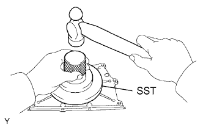 |
Using SST and a hammer, tap in a new oil seal until its surface is flush with the rear oil seal retainer edge.
Apply MP grease to the lip of the oil seal.
| 2. INSTALL ENGINE REAR OIL SEAL RETAINER |
Remove any old packing (FIPG) material and be careful not to drop any oil on the contact surfaces of the oil seal retainer and cylinder block.
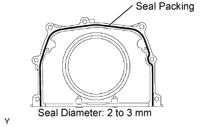 |
Apply seal packing in a continuous line as shown in the illustration.
Install the oil seal retainer with the 5 bolts and 2 nuts.
| 3. INSTALL KNOCK SENSOR |
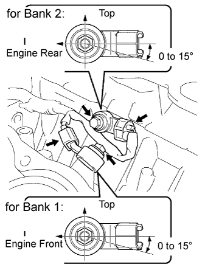 |
Install the 2 knock sensors with the 2 bolts as shown in the illustration.
Connect the 2 knock sensor connectors.
| 4. INSTALL NO. 1 WATER OUTLET PIPE |
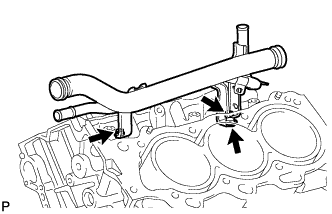 |
Install the water outlet pipe with the 3 bolts.
| 5. INSTALL CYLINDER HEAD GASKET (for Bank 1) |
Remove any old packing (FIPG) material and be careful not to drop any oil on the contact surfaces of the cylinder head and cylinder block.
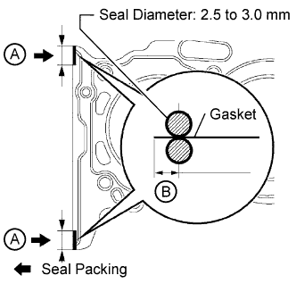 |
Apply seal packing to a new cylinder head gasket as shown in the illustration.
| Item | Specified Condition |
| A | 10 to 15 mm (0.394 to 0.591 in.) |
| B | 1.25 to 1.5 mm (0.0492 to 0.0591 in.) |
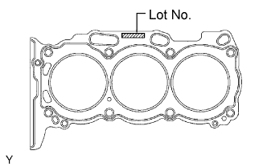 |
Place the cylinder head gasket on the cylinder block surface with the front face of the Lot No. stamp upward.
| 6. INSTALL CYLINDER HEAD SUB-ASSEMBLY RH (for Bank 1) |
Place the cylinder head on the cylinder head gasket.
Install the 8 cylinder head bolts and plate washers.
Apply a light coat of engine oil to the threads and under the heads of the cylinder head bolts.
Install the plate washers to the cylinder head bolts.
Step 1:
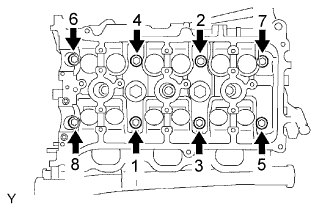 |
Using a 10 mm bi-hexagon wrench, install and uniformly tighten the 8 cylinder head bolts with plate washers in several steps in the sequence shown in the illustration.
Step 2:
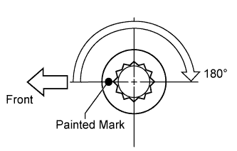 |
Mark the cylinder head bolt heads with paint as shown in the illustration.
Tighten the cylinder head bolts 180° in the sequence shown in step 1.
Check that the painted marks are now facing rearward.
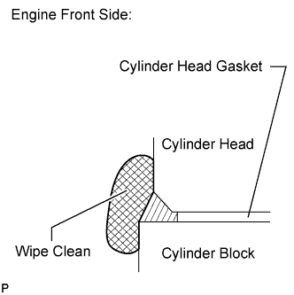 |
Seal packing will seep out from the front side of engine. Thoroughly wipe off the seal packing that seeps out.
| 7. INSTALL NO. 2 CYLINDER HEAD GASKET (for Bank 2) |
Remove any old packing (FIPG) material and be careful not to drop any oil on the contact surfaces of the cylinder head and cylinder block.
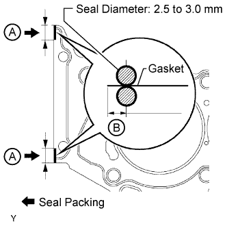 |
Apply seal packing to a new cylinder head gasket as shown in the illustration.
| Item | Specified Condition |
| A | 10 to 15 mm (0.394 to 0.591 in.) |
| B | 1.25 to 1.5 mm (0.0492 to 0.0591 in.) |
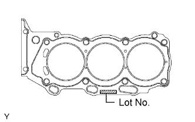 |
Place the cylinder head gasket on the cylinder block surface with the front face of the Lot No. stamp upward.
| 8. INSTALL CYLINDER HEAD SUB-ASSEMBLY LH (for Bank 2) |
Place the cylinder head on the cylinder head gasket.
Install the 8 cylinder head bolts and plate washers.
Apply a light coat of engine oil to the threads and under the heads of the cylinder head bolts.
Install the plate washers to the cylinder head bolts.
Step 1:
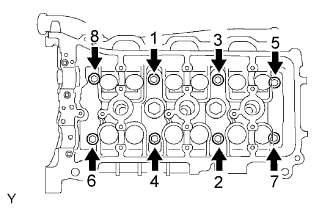 |
Using a 10 mm bi-hexagon wrench, install and uniformly tighten the 8 cylinder head bolts with plate washers in several steps in the sequence shown in the illustration.
Step 2:
Mark the cylinder head bolt heads with paint as shown in the illustration.
Tighten the cylinder head bolts 180° in the sequence shown in step 1.
Check that the painted marks are now facing rearward.
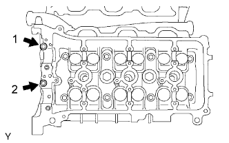 |
Install the 2 bolts in the order shown in the illustration.
Apply a light coat of engine oil to the threads of the cylinder head bolts.
Install the 2 cylinder head bolts. Using several steps, tighten the bolts uniformly in the sequence shown in the illustration.
Seal packing will seep out from the front side of the engine. Thoroughly wipe off seal packing that seeps out.
| 9. INSTALL NO. 1 CAMSHAFT BEARING |
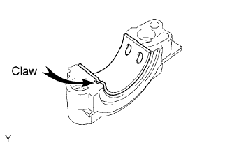 |
Align the bearing claw with the claw groove of the bearing cap, and push in the No. 1 camshaft bearing.
| 10. INSTALL NO. 2 CAMSHAFT BEARING |
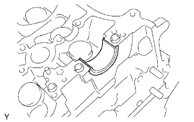 |
Install the No. 2 camshaft bearing to the cylinder head.
| 11. INSTALL NO. 1 CAMSHAFT AND NO. 2 CAMSHAFT |
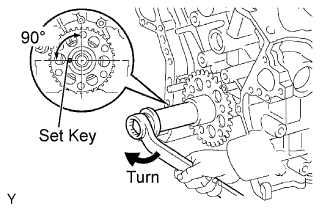 |
Set the crankshaft position.
Using the crankshaft pulley set bolt, turn the crankshaft, and set the crankshaft set key into the left horizontal position.
Apply new engine oil to the thrust portion and journals of the camshafts.
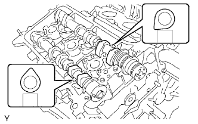 |
Place the 2 camshafts onto the cylinder head with the cam lobes of the No. 1 cylinder facing each direction as shown in the illustration.
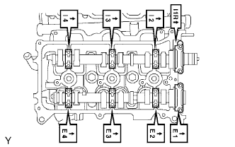 |
Set the 8 bearing caps in their proper locations.
Apply a light coat of engine oil to the threads and under the heads of the bearing cap bolts.
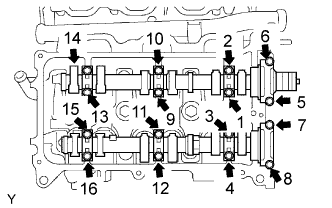 |
Uniformly install the 16 bolts in several steps in the order shown in the illustration.
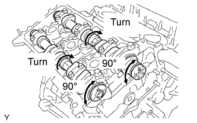 |
Using a wrench, turn the camshafts clockwise until the camshaft knock pin is at a position 90° to the cylinder head.
| 12. INSTALL NO. 3 CAMSHAFT AND NO. 4 CAMSHAFT |
Set the crankshaft position.
Using the crankshaft pulley set bolt, turn the crankshaft, and set the crankshaft set key into the left horizontal position.
Apply new engine oil to the thrust portion and journals of the camshafts.
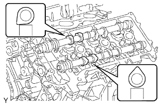 |
Place the 2 camshafts onto the cylinder head with the cam lobes of the No. 2 cylinder facing as shown in the illustration.
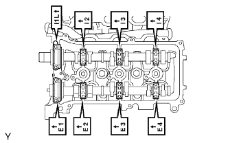 |
Set the 8 bearing caps in their proper locations.
Apply a light coat of engine oil to the threads and under the heads of the bearing cap bolts.
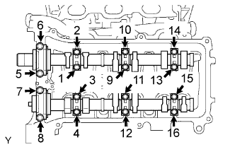 |
Uniformly install the 16 bolts in several steps in the order shown in the illustration.
| 13. INSTALL NO. 2 CHAIN TENSIONER ASSEMBLY (for Bank 1) |
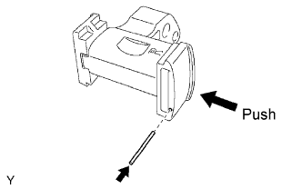 |
While pushing in the tensioner, insert a pin of φ1.0 mm (0.0394 in.) into the hole to fix the tensioner in place.
 |
Install the No. 2 chain tensioner with the bolt.
| 14. INSTALL CAMSHAFT TIMING GEARS AND NO. 2 CHAIN (for Bank 1) |
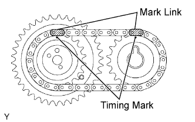 |
Align the mark links (yellow) of the No. 2 chain with the timing marks (1-dot mark) of the camshaft timing gear and sprocket as shown in the illustration.
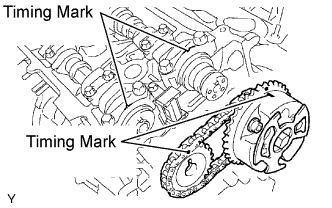 |
Align the timing marks on the camshaft timing gear and sprocket with the timing marks on the bearing caps, and install the camshaft timing gear and sprocket with the No. 2 chain to the camshafts.
Temporarily install the camshaft timing gear set bolt and camshaft timing sprocket set bolt.
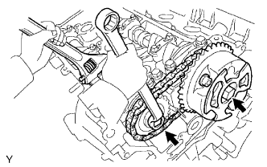 |
Hold the hexagonal portion of the camshaft with a wrench, and tighten the 2 bolts.
Remove the pin from the No. 2 chain tensioner.
| 15. INSTALL NO. 3 CHAIN TENSIONER ASSEMBLY (for Bank 2) |
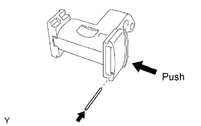 |
While pushing in the tensioner, insert a pin of φ1.0 mm (0.0394 in.) into the hole to fix the tensioner in place.
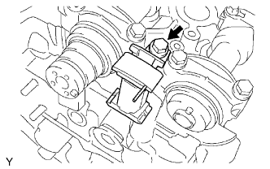 |
Install the No. 3 chain tensioner with the bolt.
| 16. INSTALL CAMSHAFT TIMING GEARS AND NO. 2 CHAIN (for Bank 2) |
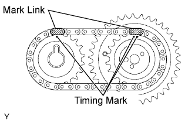 |
Align the mark links (yellow) of the No. 2 chain with the timing marks (1-dot mark and 2-dot mark) of the camshaft timing gear and sprocket as shown in the illustration.
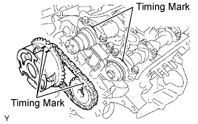 |
Align the timing marks on the camshaft timing gear and sprocket with the timing marks on the bearing caps, and install the camshaft timing gear and sprocket with the No. 2 chain to the camshafts.
Temporarily install the camshaft timing gear set bolt and camshaft timing sprocket set bolt.
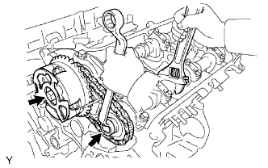 |
Hold the hexagonal portion of the camshaft with a wrench, and tighten the 2 bolts.
Remove the pin from the No. 3 chain tensioner.
| 17. INSTALL NO. 1 CHAIN VIBRATION DAMPER |
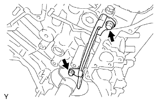 |
Install the No. 1 chain vibration damper with the 2 bolts.
| 18. INSTALL CRANKSHAFT TIMING GEAR |
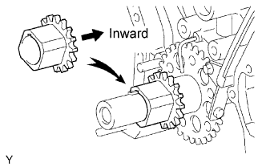 |
Align the timing gear set key with the key groove of the timing gear.
Install the timing gear onto the crankshaft with the gear facing inward as shown in the illustration.
| 19. INSTALL CHAIN TENSIONER SLIPPER |
| 20. INSTALL NO. 1 CHAIN TENSIONER ASSEMBLY |
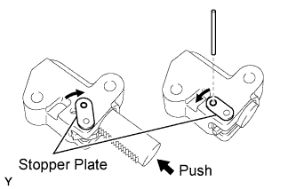 |
While turning the stopper plate of the tensioner clockwise, push in the plunger of the tensioner as shown in the illustration.
While turning the stopper plate of the tensioner counterclockwise, insert a bar of φ3.5 mm (0.138 in.) into the holes on the stopper plate and tensioner to fix the stopper plate in place.
Install the chain tensioner with the 2 bolts.
| 21. INSTALL NO. 1 CHAIN SUB-ASSEMBLY |
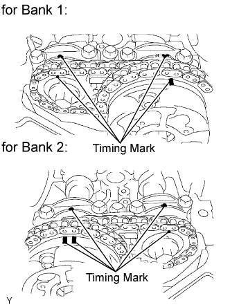 |
Set the No. 1 cylinder to TDC/compression.
Align the timing marks of the camshaft timing gears and sprockets with the timing marks of the bearing caps.
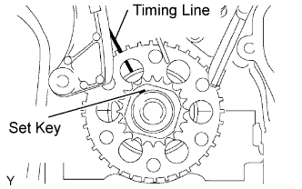 |
Install the crankshaft pulley set bolt, and turn the crankshaft to align the crankshaft set key with the timing line of the cylinder block.
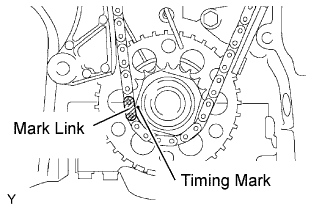 |
Align the mark link (yellow) with the timing mark of the crankshaft timing gear.
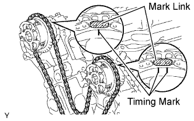 |
Align the mark links (orange) with the timing marks of the camshaft timing gears, and install the No. 1 chain.
| 22. INSTALL NO. 2 CHAIN VIBRATION DAMPER |
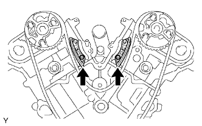 |
Install the 2 No. 2 chain vibration dampers.
| 23. INSTALL NO. 1 IDLE GEAR SHAFT |
Apply a light coat of engine oil to the rotating surface of the No. 1 idle gear shaft.
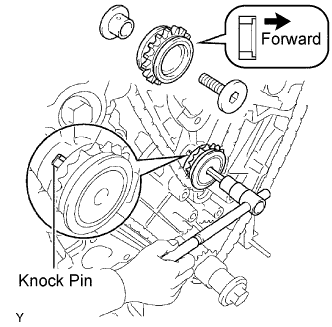 |
Temporarily install the No. 1 idle gear shaft and No. 1 idle gear with the No. 2 idle gear shaft while aligning the knock pin of the No. 1 idle gear shaft with the knock pin groove of the cylinder block.
Using a 10 mm hexagon wrench, tighten the No. 2 idle gear shaft.
Remove the bar from the chain tensioner.
| 24. INSTALL FRONT CRANKSHAFT OIL SEAL |
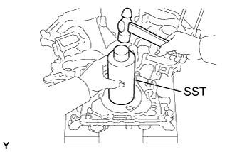 |
Using SST and a hammer, tap in a new oil seal until its surface is flush with the timing chain cover edge.
Apply MP grease to the lip of the oil seal.
| 25. INSTALL WATER PUMP ASSEMBLY |
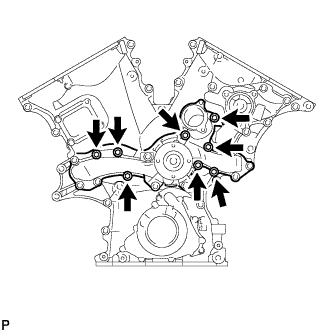 |
Install a new gasket and the water pump with the 8 bolts.
| 26. INSTALL TIMING CHAIN COVER SUB-ASSEMBLY |
Remove any old packing (FIPG) material and be careful not to drop any oil on the contact surfaces of the timing chain cover, cylinder head and cylinder block.
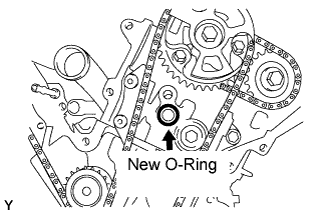 |
Install a new O-ring to the cylinder head for bank 2 as shown in the illustration.
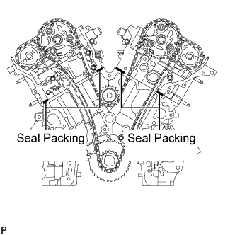 |
Apply seal packing as shown in the illustration.
Apply seal packing in a continuous line to the timing chain cover as shown in the illustration.
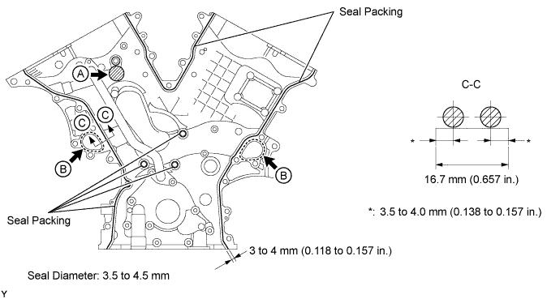
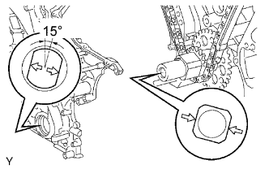 |
Align the keyway of the oil pump drive rotor with the rectangular portion of the crankshaft timing gear, and slide the timing chain cover into place.
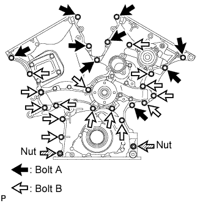 |
Install the timing chain cover with the 24 bolts labeled A and B, and the 2 nuts. Tighten the bolts and nuts uniformly in several steps.
| Item | Quantity | Length |
| Bolt A | 9 | 25 mm (0.984 in.) |
| Bolt B | 15 | 55 mm (2.17 in.) |
| 27. INSTALL OIL PAN SUB-ASSEMBLY |
Remove any old packing (FIPG) material and be careful not to drop any oil on the contact surfaces of the cylinder block, rear oil seal retainer and oil pan.
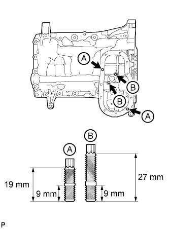 |
Using an E6 "TORX" wrench, install the 4 stud bolts.
| Item | Length |
| A | 19 mm (0.748 in.) |
| 9 mm (0.354 in.) | |
| B | 27 mm (1.06 in.) |
| 9 mm (0.354 in.) |
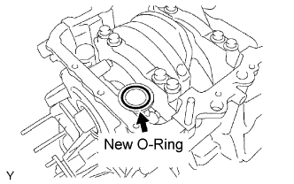 |
Install a new O-ring to the timing chain cover.
Apply seal packing in a continuous line as shown in the illustration.
Install the oil pan with the 17 bolts and 2 nuts. Tighten the bolts and nuts uniformly in several steps.
| Item | Quantity | Length |
| A | 6 | 25 mm (0.984 in.) |
| B | 9 | 45 mm (1.77 in.) |
| C | 2 | 14 mm (0.551 in.) |
| 28. INSTALL OIL STRAINER SUB-ASSEMBLY |
Install a new gasket and the oil strainer with the 2 nuts.
| 29. INSTALL NO. 2 OIL PAN SUB-ASSEMBLY |
Apply seal packing in a continuous line as shown in the illustration.
Install the No. 2 oil pan with the 10 bolts and 2 nuts. Tighten the bolts and nuts uniformly in several steps.
| 30. INSTALL OIL PAN DRAIN PLUG |
Install the drain plug and a new gasket.
| 31. INSTALL CRANKSHAFT PULLEY |
Using SST, install the crankshaft pulley with the pulley set bolt.
| 32. SET NO. 1 CYLINDER TO TDC/COMPRESSION |
Turn the crankshaft pulley, and align its groove with the timing mark "0" of the timing chain cover.
Check that the timing marks of the camshaft timing gears and sprockets are aligned with the timing marks of the bearing caps as shown in the illustration.
If not, turn the crankshaft 1 complete revolution (360°) and align the timing marks as above.
| 33. INSPECT VALVE CLEARANCE |
Check the valves indicated in the illustration.
Using a feeler gauge, measure the clearance between the valve lifter and camshaft.
| Item | Specified Condition |
| Intake | 0.15 to 0.25 mm (0.00591 to 0.00984 in.) |
| Exhaust | 0.29 to 0.39 mm (0.0114 to 0.0154 in.) |
Record the out-of-specification valve clearance measurements. They will be used later to determine the required replacement valve lifter.
Turn the crankshaft 2/3 of a revolution (240°).
Check the valves indicated in the illustration.
Using a feeler gauge, measure the clearance between the valve lifter and camshaft.
| Item | Specified Condition |
| Intake | 0.15 to 0.25 mm (0.00591 to 0.00984 in.) |
| Exhaust | 0.29 to 0.39 mm (0.0114 to 0.0154 in.) |
Record the out-of-specification valve clearance measurements. They will be used later to determine the required replacement valve lifter.
Turn the crankshaft 2/3 of a revolution (240°).
Check the valves indicated in the illustration.
Using a feeler gauge, measure the clearance between the valve lifter and camshaft.
| Item | Specified Condition |
| Intake | 0.15 to 0.25 mm (0.00591 to 0.00984 in.) |
| Exhaust | 0.29 to 0.39 mm (0.0114 to 0.0154 in.) |
Record the out-of-specification valve clearance measurements. They will be used later to determine the required replacement valve lifter.
| 34. ADJUST VALVE CLEARANCE |
Set the No. 1 cylinder to TDC/compression.
Turn the crankshaft pulley, and align the notch with the timing mark "0" of the timing chain cover.
Check that the timing marks of the camshaft timing gears and sprockets are aligned with the timing marks of the bearing caps as shown in the illustration.
If not, turn the crankshaft 1 complete revolution (360°) and align the timing marks as above.
Place paint marks on the chain links that correspond with the timing marks of the camshaft timing gears.
Remove the No. 1 chain tensioner.
Remove the 4 bolts, timing chain cover plate and gasket.
While rotating the stopper plate of the No. 1 chain tensioner clockwise, push in the plunger of the No. 1 chain tensioner as shown in the illustration.
While rotating the stopper plate of the tensioner counterclockwise downward, insert a bar of φ3.5 mm (0.138 in.) into the holes in the stopper plate and tensioner to fix the stopper plate in place.
Remove the 2 bolts and No. 1 chain tensioner.
Remove the No. 2 camshaft.
While raising the No. 2 chain tensioner, insert a pin of φ1.0 mm (0.0394 in.) into the hole to fix the tensioner in place.
Hold the hexagonal portion of the No. 2 camshaft with a wrench, and remove the camshaft timing sprocket set bolt.
Separate the camshaft timing sprocket from the No. 2 camshaft.
Rotate the camshaft counterclockwise using the wrench so that the cam lobes of the No. 1 cylinder face upward as shown in the illustration.
Uniformly loosen and remove the 8 bearing cap bolts in the sequence shown in the illustration.
Remove the 4 bearing caps and No. 2 camshaft.
Remove the No. 2 chain tensioner.
Remove the No. 2 chain tensioner bolt, No. 2 chain tensioner and camshaft timing sprocket.
Remove the No. 1 camshaft.
Hold the hexagonal portion of the No. 1 camshaft with a wrench, and loosen the camshaft timing gear set bolt.
Slide the camshaft timing gear and separate the No. 1 chain from the camshaft timing gear.
Rotate the No. 1 camshaft counterclockwise using a wrench so that the cam lobes of the No. 1 cylinder face downward as shown in the illustration.
Uniformly loosen and remove the 8 bearing cap bolts in the sequence shown in the illustration.
Remove the 4 bearing caps.
Remove the camshaft timing gear set bolt with the No. 1 camshaft lifted up, and then remove the No. 1 camshaft and camshaft timing gear with the No. 2 chain.
Tie the No. 1 chain with a string as shown in the illustration.
Remove the No. 4 camshaft.
While pushing down the No. 3 chain tensioner, insert a pin of φ1.0 mm (0.0394 in.) into the hole to fix the tensioner in place.
Hold the hexagonal portion of the No. 4 camshaft with a wrench, and remove the camshaft timing sprocket set bolt.
Separate the camshaft timing sprocket from the No. 4 camshaft.
Uniformly loosen and remove the 8 bearing cap bolts in the sequence shown in the illustration.
Remove the 4 bearing caps and No. 4 camshaft.
Remove the No. 3 chain tensioner.
Remove the No. 3 chain tensioner bolt, No. 3 chain tensioner and camshaft timing sprocket.
Remove the No. 3 camshaft.
Using several steps, loosen and remove the 8 bearing cap bolts uniformly in the sequence shown in the illustration.
Remove the 4 bearing caps.
Hold the No. 1 chain, and remove the No. 3 camshaft with camshaft timing gear and No. 2 chain.
Tie the No. 1 chain with a string as shown in the illustration.
Remove the 24 valve lifters from the cylinder head LH and RH.
Determine the size of the valve lifter to be installed according to the following formulas or charts.
Using a micrometer, measure the thickness of the removed lifter.
Calculate the thickness of a new lifter so that the valve clearance comes within the specified value.
Select a new lifter with a thickness as close as possible to the calculated value.
| Lifter No. | Thickness | Lifter No. | Thickness | Lifter No. | Thickness |
| 06 | 5.060 mm (0.1992 in.) | 30 | 5.300 mm (0.2087 in.) | 54 | 5.540 mm (0.2181 in.) |
| 08 | 5.080 mm (0.2000 in.) | 32 | 5.320 mm (0.2094 in.) | 56 | 5.560 mm (0.2189 in.) |
| 10 | 5.100 mm (0.2008 in.) | 34 | 5.340 mm (0.2102 in.) | 58 | 5.580 mm (0.2197 in.) |
| 12 | 5.120 mm (0.2016 in.) | 36 | 5.360 mm (0.2110 in.) | 60 | 5.600 mm (0.2205 in.) |
| 14 | 5.140 mm (0.2024 in.) | 38 | 5.380 mm (0.2118 in.) | 62 | 5.620 mm (0.2213 in.) |
| 16 | 5.160 mm (0.2031 in.) | 40 | 5.400 mm (0.2126 in.) | 64 | 5.640 mm (0.2220 in.) |
| 18 | 5.180 mm (0.2039 in.) | 42 | 5.420 mm (0.2134 in.) | 66 | 5.660 mm (0.2228 in.) |
| 20 | 5.200 mm (0.2047 in.) | 44 | 5.440 mm (0.2142 in.) | 68 | 5.680 mm (0.2236 in.) |
| 22 | 5.220 mm (0.2055 in.) | 46 | 5.460 mm (0.2150 in.) | 70 | 5.700 mm (0.2244 in.) |
| 24 | 5.240 mm (0.2063 in.) | 48 | 5.480 mm (0.2157 in.) | 72 | 5.720 mm (0.2252 in.) |
| 26 | 5.260 mm (0.2071 in.) | 50 | 5.500 mm (0.2165 in.) | 74 | 5.740 mm (0.2260 in.) |
| 28 | 5.280 mm (0.2079 in.) | 52 | 5.520 mm (0.2173 in.) | - | - |
| Lifter No. | Thickness | Lifter No. | Thickness | Lifter No. | Thickness |
| 06 | 5.060 mm (0.1992 in.) | 30 | 5.300 mm (0.2087 in.) | 54 | 5.540 mm (0.2181 in.) |
| 08 | 5.080 mm (0.2000 in.) | 32 | 5.320 mm (0.2094 in.) | 56 | 5.560 mm (0.2189 in.) |
| 10 | 5.100 mm (0.2008 in.) | 34 | 5.340 mm (0.2102 in.) | 58 | 5.580 mm (0.2197 in.) |
| 12 | 5.120 mm (0.2016 in.) | 36 | 5.360 mm (0.2110 in.) | 60 | 5.600 mm (0.2205 in.) |
| 14 | 5.140 mm (0.2024 in.) | 38 | 5.380 mm (0.2118 in.) | 62 | 5.620 mm (0.2213 in.) |
| 16 | 5.160 mm (0.2031 in.) | 40 | 5.400 mm (0.2126 in.) | 64 | 5.640 mm (0.2220 in.) |
| 18 | 5.180 mm (0.2039 in.) | 42 | 5.420 mm (0.2134 in.) | 66 | 5.660 mm (0.2228 in.) |
| 20 | 5.200 mm (0.2047 in.) | 44 | 5.440 mm (0.2142 in.) | 68 | 5.680 mm (0.2236 in.) |
| 22 | 5.220 mm (0.2051 in.) | 46 | 5.460 mm (0.2150 in.) | 70 | 5.700 mm (0.2244 in.) |
| 24 | 5.240 mm (0.2063 in.) | 48 | 5.480 mm (0.2157 in.) | 72 | 5.720 mm (0.2252 in.) |
| 26 | 5.260 mm (0.2071 in.) | 50 | 5.500 mm (0.2165 in.) | 74 | 5.740 mm (0.2260 in.) |
| 28 | 5.280 mm (0.2079 in.) | 52 | 5.520 mm (0.2173 in.) | - | - |
Install the No. 3 camshaft.
Align the mark link (yellow) with the timing mark (2-dot mark) of the camshaft timing gear shown in the illustration.
Apply a light coat of engine oil to the thrust portions and journals of the No. 3 camshaft.
Temporarily put the No. 1 chain on the No. 2 chain of the camshaft timing gear.
Set the No. 3 camshaft onto the cylinder head LH with the cam lobes of the No. 2 cylinder facing downward as shown in the illustration.
Apply a light coat of engine oil to the 4 bearing caps.
Set the 4 bearing caps in their proper locations.
Apply a light coat of engine oil to the threads of the 8 bearing cap bolts.
Uniformly install the 8 bearing cap bolts in several steps in the order shown in the illustration.
Set the paint mark of the No. 1 chain between the timing marks of the camshaft timing gear.
Install the No. 3 chain tensioner.
While pushing in the tensioner, insert a pin of φ1.0 mm (0.0394 in.) into the hole to fix the tensioner in place.
Temporarily install the camshaft timing sprocket and No. 3 chain tensioner with the bolt and align the mark links (yellow) with the timing marks (1-dot mark and 2-dot mark) of the camshaft timing gear and sprocket.
Tighten the No. 3 chain tensioner bolt.
Install the No. 4 camshaft.
Apply a light coat of engine oil to the thrust portions and journals of the No. 4 camshaft.
Apply a light coat of engine oil to the threads and under the head of the camshaft timing sprocket set bolt.
Align the knock pin hole on the camshaft timing sprocket with the knock pin of the No. 4 camshaft, and insert the No. 4 camshaft into the camshaft timing sprocket.
Temporarily install the camshaft timing sprocket set bolt.
Set the 4 bearing caps in their proper locations.
Apply a light coat of engine oil to the threads and under the heads of the 8 bearing cap bolts.
Uniformly install the 8 bearing cap bolts in several steps in the order shown in the illustration.
Hold the hexagonal portion of the No. 4 camshaft with a wrench, and tighten the camshaft timing sprocket set bolt.
Remove the pin from the No. 3 chain tensioner.
Install the No. 1 camshaft.
Align the mark link (yellow) with the timing mark (1-dot mark) of the camshaft timing gear as shown in the illustration.
Apply a light amount of engine oil to the thrust portions and journals of the camshaft.
Temporarily put the No. 1 chain on the No. 2 chain of the camshaft timing gear.
Align the knock pin hole of the camshaft timing gear with the knock pin of the No. 1 camshaft, and insert the No. 1 camshaft into the camshaft timing gear.
Apply a light coat of engine oil to the threads and under the head of the camshaft timing gear set bolt.
Temporarily install the camshaft timing gear set bolt.
 |
Set the No. 1 camshaft onto the cylinder head RH with the cam lobes of the No. 1 cylinder facing downward as shown in the illustration.
Apply a light coat of engine oil to the 4 bearing caps.
Set the 4 bearing caps in their proper locations.
Apply a light coat of engine oil to the threads and under the heads of the 8 bearing cap bolts.
Uniformly install the 8 bearing cap bolts in several steps in the order shown in the illustration.
Rotate the No. 1 camshaft clockwise using the hexagonal portion of the No. 1 camshaft so that the timing mark of the camshaft timing gear is aligned with the timing mark of the camshaft bearing cap.
Align the paint mark of the No. 1 chain with the timing mark of the camshaft timing gear.
Hold the hexagonal portion of the No. 1 camshaft with a wrench, and tighten the camshaft timing gear set bolt.
Install the No. 2 chain tensioner.
While pushing in the tensioner, insert a pin of φ1.0 mm (0.0394 in.) into the hole to fix the tensioner in place.
Temporarily install the camshaft timing sprocket and No. 2 chain tensioner with the bolt and align the mark links (yellow) with the timing marks (1-dot mark and 2-dot mark) of the camshaft timing gear and sprocket.
Tighten the No. 2 chain tensioner bolt.
Install the No. 2 camshaft.
Apply a light coat of engine oil to the thrust portions and journals of the No. 2 camshaft.
Set the No. 2 camshaft onto the cylinder head RH with the cam lobes of the No. 1 cylinder facing upward as shown in the illustration.
Apply a light coat of engine oil to the 4 bearing caps.
Set the 4 bearing caps in their proper locations.
Apply a light coat of engine oil to the threads and under the heads of the 8 bearing cap bolts.
Uniformly install the 8 bearing cap bolts in several steps in the order shown in the illustration.
Rotate the No. 2 camshaft clockwise using a wrench so that the knock pin of the No. 2 camshaft is aligned with the knock pin hole of the camshaft timing sprocket.
Apply a light coat of engine oil to the threads and under the head of the camshaft timing sprocket set bolt.
Hold the hexagonal portion of the No. 2 camshaft with a wrench, and install the camshaft timing sprocket set bolt.
Remove the pin from the No. 2 chain tensioner.
Install the No. 1 chain tensioner.
While turning the stopper plate of the tensioner clockwise, push in the plunger of the tensioner as shown in the illustration.
While turning the stopper plate of the tensioner counterclockwise, insert a bar of φ3.5 mm (0.138 in.) into the holes on the stopper plate and tensioner to fix the stopper plate in place.
Apply a light coat of engine oil to the threads and under the heads of the 2 No. 1 chain tensioner bolts.
Install the No. 1 chain tensioner with the 2 bolts.
Remove the bar from the chain tensioner.
Install a new gasket and the timing chain cover plate with the 4 bolts.
Turn the crankshaft pulley 2 complete revolutions slowly, and align the notch with the timing mark "0" of the timing chain cover.
Check that the timing marks of the camshaft timing gears and sprockets are aligned with the timing marks of the bearing caps as shown in the illustration.
| 35. INSTALL CYLINDER HEAD COVER SUB-ASSEMBLY RH |
Remove any old packing (FIPG) material and be careful not to drop any oil on the contact surfaces of the cylinder head, timing chain cover and cylinder head cover.
Apply seal packing as shown in the illustration.
Install a new gasket to the cylinder head cover.
Install the seal washers to the bolts.
Temporarily install the cylinder head cover with the 10 bolts and 2 nuts. Tighten the bolts and nuts uniformly in several steps.
| 36. INSTALL CYLINDER HEAD COVER SUB-ASSEMBLY LH |
Remove any old packing (FIPG) material and be careful not to drop any oil on the contact surfaces of the cylinder head, timing chain cover and cylinder head cover.
Apply seal packing as shown in the illustration.
Install a new gasket to the cylinder head cover.
Install the seal washers to the bolts.
Temporarily install the cylinder head cover with the 10 bolts and 2 nuts. Tighten the bolts and nuts uniformly in several steps.
| 37. INSTALL VENTILATION VALVE SUB-ASSEMBLY |
Apply adhesive to the threads of the ventilation valve.
Install the ventilation valve to the cylinder head cover.
| 38. INSTALL SPARK PLUG |
Install the 6 spark plugs.
| 39. INSTALL OIL FILLER CAP HOUSING |
Install a new gasket and the oil filler cap housing with the 2 nuts.
| 40. INSTALL OIL FILLER CAP SUB-ASSEMBLY |
| 41. INSTALL OIL CONTROL VALVE FILTER |
Install 2 new gaskets to 2 new unions.
Insert new filters to the unions.
Apply adhesive to 2 or 3 threads of the unions.
Install the unions to the cylinder head LH and RH.
| 42. INSTALL CRANKSHAFT POSITION SENSOR |
Install the sensor with the bolt.
| 43. INSTALL VVT SENSOR |
Apply a light coat of engine oil to the O-ring of each VVT sensor.
Install the 2 VVT sensors with the 2 bolts.
| 44. INSTALL CAMSHAFT TIMING OIL CONTROL VALVE ASSEMBLY LH |
Apply a light coat of engine oil to a new O-ring and install it to the camshaft timing oil control valve.
Install the camshaft timing oil control valve with the bolt.
| 45. INSTALL CAMSHAFT TIMING OIL CONTROL VALVE ASSEMBLY RH |
Apply a light coat of engine oil to a new O-ring and install it to the camshaft timing oil control valve.
Install the camshaft timing oil control valve with the bolt.
| 46. INSTALL CYLINDER BLOCK WATER DRAIN COCK SUB-ASSEMBLY |
Apply adhesive to 2 or 3 threads of the drain cock end.
Install the drain cock.
Rotate the drain cock clockwise as shown in the illustration.
| 47. INSTALL REAR WATER BY-PASS JOINT |
Apply soapy water to a new O-ring, and install it to the water outlet pipe. Then set 2 new gaskets to the water ports LH and RH.
Install the rear water by-pass joint with the 2 bolts and 4 nuts.
| 48. INSTALL WATER INLET HOUSING |
Apply soapy water to a new O-ring, install it to the water outlet pipe.
Install a new O-ring to the water pump.
Install a new gasket to the water pump.
Install the water inlet with the 5 bolts.
| 49. CONNECT NO. 3 WATER BY-PASS HOSE |
| 50. CONNECT NO. 2 WATER BY-PASS HOSE |
| 51. CONNECT NO. 1 WATER BY-PASS HOSE |
| 52. INSTALL OIL FILTER BRACKET SUB-ASSEMBLY |
Set a new O-ring to the timing chain cover.
Install the oil filter bracket with the 3 bolts and 2 nuts.
| 53. INSTALL OIL COOLER ASSEMBLY |
Clean the oil cooler contact surface on the cooler mounting.
Apply a light coat of engine oil to a new O-ring, and install it into the oil cooler.
Apply a light coat of engine oil to the threads of the oil cooler union bolt.
Align the protrusion of the oil filter bracket with the cutout of the oil cooler.
Install the oil cooler with the plate washer and oil cooler union bolt.
Install the oil cooler hose and No. 2 oil cooler hose.
| 54. INSTALL OIL FILTER SUB-ASSEMBLY |
Check and clean the oil filter installation surface.
Apply clean engine oil to the gasket of a new oil filter.
Lightly screw the oil filter into place by hand. Tighten it until the gasket contacts the seat.
Using SST, tighten the oil filter. Depending on the work space available, choose from the following.
If enough space is available, use a torque wrench to tighten the oil filter.
If enough space is not available to use a torque wrench, tighten the oil filter a 3/4 turn by hand or with a common wrench.
Install the service hole cover to the No. 2 engine under cover with the 2 bolts.